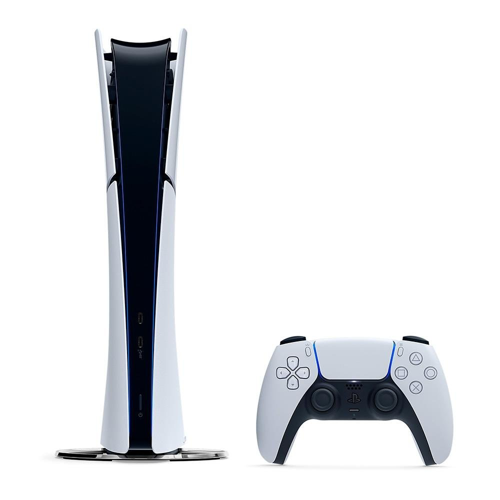

PlayStation 5 Slim Edição Digital: vale a pena comprar em 2026?
📅 Publicado em 19/07/2026
Poucos produtos de tecnologia mantêm o mesmo hype anos após o lançamento como o PlayStation 5 Slim Edição Digital. Mesmo já não sendo mais novidade, o console segue como uma das apostas mais desejadas por quem quer jogar em alta performance sem pagar pelo leitor de disco que boa parte dos usuários nem usa mais. Compacto, silencioso e com hardware capaz de rodar praticamente qualquer lançamento em 4K, o PlayStation 5 Slim Digital promete a mesma potência da versão com leitor, só que em um corpo menor e em um formato voltado inteiramente para a biblioteca digital de jogos. Mas ele ainda vale a pena em 2026? Reunimos os principais pontos para ajudar na sua decisão.
Design: menor, mais leve e sem perder a personalidade.
A versão Slim manteve a identidade visual futurista que já era marca registrada do PlayStation 5, só que em um corpo bem mais compacto. O console pesa cerca de 2,6 kg e mede aproximadamente 35,8 x 8 x 21,6 cm, uma redução expressiva em relação ao modelo original de 2020. Por não ter leitor de disco, o gabinete fica ainda mais enxuto, o que facilita a organização do home theater e a instalação em móveis mais estreitos. A Sony manteve os suportes em acrílico que permitem posicionar o console tanto na horizontal quanto na vertical, e o visual branco com detalhes em preto continua sendo o padrão de fábrica.
Ficha técnica e desempenho.
O coração do console é formado por uma CPU customizada AMD, arquitetura "Zen 2", com 8 núcleos e 16 threads, operando a até 3,5 GHz. A GPU também é uma parceria com a AMD, baseada na arquitetura RDNA 2, com frequência variável de até 2,23 GHz e suporte nativo a Ray Tracing por hardware, entregando até 10,3 teraflops de poder gráfico. Esse conjunto é acompanhado por 16 GB de memória GDDR6 com largura de banda de 448 GB/s, o que garante taxas de quadros estáveis mesmo em cenas complexas, com muitos elementos na tela. Na prática, isso significa suporte a:
- Resolução 4K nativa, com upscaling para TVs 8K.
- Taxas de até 120 FPS em jogos compatíveis, com saída HDMI 2.1 e suporte a VRR.
- Ray Tracing em tempo real, com reflexos, sombras e iluminação mais realistas.
- HDR para cores mais vibrantes e contraste mais fiel em telas compatíveis.
Armazenamento: SSD ultrarápido.
O PlayStation 5 Slim Digital utiliza um SSD NVMe de altíssima velocidade, com leitura de até 5,5 GB/s no modo raw — o que praticamente elimina as telas de carregamento em jogos otimizados para a geração atual. Vale destacar que a capacidade de armazenamento não é única: dependendo da versão e do mercado, o console pode ser encontrado com diferentes tamanhos de SSD, por isso vale sempre conferir a capacidade exata na embalagem ou na ficha do produto antes da compra. Como em qualquer PlayStation 5, uma parte do espaço total também é reservada pelo próprio sistema. Para quem joga títulos muito pesados ou mantém uma biblioteca extensa instalada ao mesmo tempo, vale considerar a expansão via slot M.2 interno ou armazenamento externo USB para os jogos de PS4, já que o console é compatível com mais de 4.000 títulos da geração anterior.
DualSense e experiência de jogo.
O controle sem fio DualSense que acompanha o console continua sendo um dos grandes diferenciais da geração. Os gatilhos adaptáveis simulam a resistência física de ações do jogo — como esticar a corda de um arco ou pisar no freio de um carro —, enquanto o feedback tátil substitui a vibração tradicional por sensações muito mais específicas, como o impacto de passos em diferentes superfícies. Outro destaque é o áudio 3D "Tempest", que cria uma sensação de espaço e profundidade sonora mesmo com fones estéreo comuns, ajudando a localizar inimigos e efeitos ao redor do jogador.
Edição Digital: sem disco, mais praticidade.
Diferente da versão com leitor, a Edição Digital não possui unidade de disco físico. Toda a biblioteca de jogos é comprada e baixada diretamente pela PlayStation Store, o que traz algumas vantagens:
- Console mais leve e compacto.
- Preço de entrada mais baixo do que a versão com leitor.
- Sem necessidade de trocar mídias físicas para jogar.
Em contrapartida, quem gosta de comprar jogos físicos, revender títulos usados ou assistir Blu-rays não vai encontrar essa opção nativamente — embora a Sony já tenha lançado, em alguns mercados, um leitor de disco removível vendido separadamente para quem quiser adicionar essa função depois.
Conectividade
O PlayStation 5 Slim Digital conta com:
- Wi-Fi (802.11 a/b/g/n/ac/ax) e Bluetooth 5.1.
- Entrada Ethernet Gigabit para conexão via cabo.
- 1x USB-C de alta velocidade e 1x USB-C SuperSpeed na frente.
- 2x USB-A SuperSpeed na traseira (uma delas necessária para o PS VR2).
- Saída HDMI 2.1, compatível com TVs 4K/120Hz e 8K.
Especificações
- CPU: AMD "Zen 2", 8 núcleos / 16 threads, até 3,5 GHz.
- GPU: AMD RDNA 2, até 2,23 GHz, 10,3 teraflops, Ray Tracing.
- Memória: 16 GB GDDR6, 448 GB/s.
- Armazenamento: SSD NVMe ultrarrápido (leitura de até 5,5 GB/s); capacidade varia conforme a versão.
- Vídeo: 4K nativo, upscaling 8K, até 120 FPS, HDMI 2.1, VRR.
- Áudio: Tempest 3D AudioTech.
- Edição Digital, sem leitor de disco.
- Peso: aproximadamente 2,6 kg.
- Dimensões: 35,8 x 8 x 21,6 cm.
- Conectividade: Wi-Fi, Bluetooth 5.1, Ethernet, USB-C e USB-A.
- Retrocompatibilidade: Mais de 4.000 jogos de PS4.
Pontos positivos
- ✅ Desempenho de ponta para jogos em 4K e 120 FPS.
- ✅ SSD ultrarrápido, quase sem telas de carregamento.
- ✅ Ray Tracing nativo por hardware.
- ✅ Design compacto e mais leve do que o PlayStation 5 original.
- ✅ DualSense com feedback tátil e gatilhos adaptáveis.
- ✅ Áudio 3D Tempest muito imersivo.
- ✅ Ampla retrocompatibilidade com jogos de PS4.
Pontos negativos
- ❌ Sem leitor de disco nativo (não permite jogos físicos nem Blu-ray sem acessório extra).
- ❌ Capacidade de armazenamento varia conforme a versão, o que exige atenção na hora da compra.
- ❌ Expansão de armazenamento exige SSD M.2 compatível, vendido à parte.
- ❌ Não indicado para quem prioriza mídia física e revenda de jogos usados.
Conclusão
O PlayStation 5 Slim Edição Digital continua sendo, mesmo em 2026, uma das melhores portas de entrada para a geração atual de consoles. O hardware entrega desempenho de sobra para jogos em 4K com Ray Tracing, o SSD ultrarrápido praticamente elimina o tempo de carregamento e o DualSense segue sendo um dos controles mais imersivos do mercado. O formato totalmente digital é ideal para quem já vive na nuvem de jogos e não faz questão de mídia física, permitindo economizar em relação à versão com leitor. Por outro lado, quem valoriza jogos físicos ou pretende revender títulos usados deve considerar a versão com leitor de disco ou a possibilidade de adicionar o leitor removível posteriormente. No fim das contas, para quem busca potência, agilidade e a melhor experiência de jogo disponível hoje em um formato compacto, o PlayStation 5 Slim Digital continua sendo uma escolha acertada. Só vale sempre conferir, antes da compra, qual a capacidade exata de armazenamento da unidade específica que está sendo vendida.
Onde comprar
Transparência
Esta análise foi elaborada com base em informações oficiais, especificações técnicas e materiais disponibilizados publicamente. O Análise Certa busca fornecer informações claras e confiáveis para ajudar na decisão de compra.